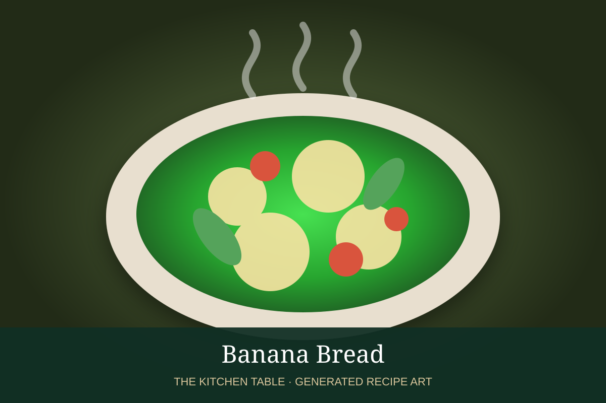

← Back to all recipes
QUICK BREAD · AMERICAN
Banana Bread
Moist banana bread with ripe bananas, brown sugar, vanilla, and warm spice.
1 hr 15 minMakes 1 loaf

Photo: Wikimedia Commons
Ingredients
- 3 very ripe bananas, mashed
- 1/2 cup unsalted butter, melted
- 3/4 cup brown sugar
- 2 large eggs
- 1 tsp vanilla extract
- 1 3/4 cups all-purpose flour
- 1 tsp baking soda
- 1/2 tsp salt
- 1/2 tsp cinnamon
- 1/2 cup chopped walnuts or pecans, optional
Preparation
- Heat oven to 350°F and grease a 9-by-5-inch loaf pan.
- Whisk mashed bananas, melted butter, brown sugar, eggs, and vanilla.
- Whisk flour, baking soda, salt, and cinnamon separately, then fold into the wet ingredients just until combined.
- Fold in nuts if using. Transfer to pan.
- Bake 50 to 60 minutes until a tester comes out with a few moist crumbs. Cool before slicing.